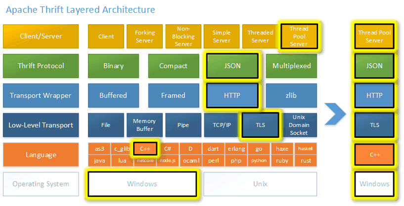

Apache Thrift Hello World
Overview

What is Thrift?
Apache Thrift is an IDL specification, RPC framework, and code generator. It works across all major operating systems, supports over 27 programming languages, 7 protocols, and 6 low-level transports. Thrift was originally developed at Facebook in 2006 and then shared with the Apache Software Foundation. Thrift supports a rich set of types and data structures, and abstracts away transport and protocol details, which lets developers focus on application logic.
Overview
This sample application includes a client and server implementing the RPC interface described in samples/modules/thrift/hello/hello.thrift. The purpose of this example is to demonstrate how components at different layers in thrift can be combined to build an application with desired features.
Requirements
Optional Modules
west config manifest.group-filter -- +optional
west update
QEMU Networking (described in Networking with QEMU)
Thrift dependencies installed for your host OS
Building and Running
This application can be run on a Linux host, with either the server or the client in the QEMU environment, and the peer is built and run natively on the host.
Building the Native Client and Server
$ make -j -C samples/modules/thrift/hello/client/
$ make -j -C samples/modules/thrift/hello/server/
Under client/, 3 executables will be generated, and components
used in each layer of them are listed below:
hello_client |
TSocket |
TBufferedTransport |
TBinaryProtocol |
hello_client_compact |
TSocket |
TBufferedTransport |
TCompactProtocol |
hello_client_ssl |
TSSLSocket |
TBufferedTransport |
TBinaryProtocol |
The same applies for the server. Only the client and the server with the same set of stacks can communicate.
Additionally, there is a hello_client.py Python script that can be used
interchangeably with the hello_client C++ application to illustrate the
cross-language capabilities of Thrift.
hello_client.py |
TSocket |
TBufferedTransport |
TBinaryProtocol |
Running the Zephyr Server in QEMU
Build the Zephyr version of the hello/server sample application like this:
west build -b board_name samples/modules/thrift/hello/server
To enable advanced features, extra arguments should be passed accordingly:
TCompactProtocol:
-DCONFIG_THRIFT_COMPACT_PROTOCOL=yTSSLSocket:
-DCONF_FILE="prj.conf ../overlay-tls.conf"
For example, to build for qemu_x86_64 with TSSLSocket support:
west build -b qemu_x86_64 samples/modules/thrift/hello/server -- -DCONF_FILE="prj.conf ../overlay-tls.conf"
west build -t run
In another terminal, run the hello_client sample app compiled for the
host OS:
$ ./hello_client 192.0.2.1
$ ./hello_client_compact 192.0.2.1
$ ./hello_client_ssl 192.0.2.1 ../native-cert.pem ../native-key.pem ../qemu-cert.pem
You should observe the following in the original hello/server terminal:
ping
echo: Hello, world!
counter: 1
counter: 2
counter: 3
counter: 4
counter: 5
In the client terminal, run hello_client.py app under the host OS (not
described for compact or ssl variants for brevity):
$ ./hello_client.py
You should observe the following in the original hello/server terminal.
Note that the server’s state is not discarded (the counter continues to
increase).
ping
echo: Hello, world!
counter: 6
counter: 7
counter: 8
counter: 9
counter: 10
Running the Zephyr Client in QEMU
In another terminal, run the hello_server sample app compiled for the
host OS:
$ ./hello_server 0.0.0.0
$ ./hello_server_compact 0.0.0.0
$ ./hello_server_ssl 0.0.0.0 ../native-cert.pem ../native-key.pem ../qemu-cert.pem
Then, in another terminal, run the corresponding hello/client sample:
west build -b qemu_x86_64 samples/modules/thrift/hello/client
west build -t run
The additional arguments for advanced features are the same as
hello/server.
You should observe the following in the original hello_server terminal:
ping
echo: Hello, world!
counter: 1
counter: 2
counter: 3
counter: 4
counter: 5